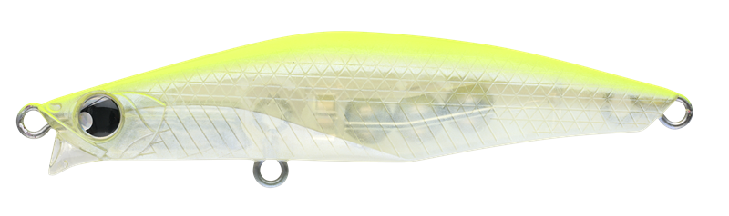
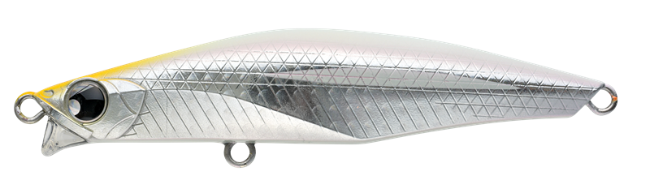
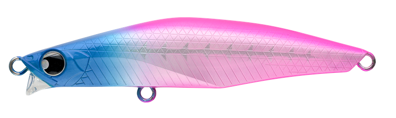
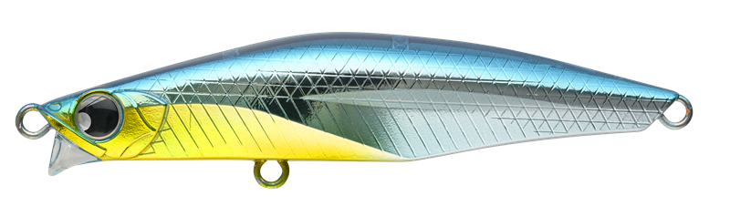

バンク100S
（BANQ100S）
バンク100S（BANQ100S）はPOP SEA CREW（ポップシークルー）のリップ付きシンキングペンシルです。
ちょうどいいボリューム感で、さまざまなフィールドをカバー。主なターゲットはシーバスです。
BANQ100Sは、82Sだとインパクトが弱い、120Sでは強すぎて合わないといった状況で、その隙間を埋めるリップ付きシンキングペンシル。ML〜Mクラスのロッドに合わせたモデルです。

画像出典:POP SEA CREW公式HP
スペック
- メーカー
- POP SEA CREW（ポップシークルー）
- タイプ
- シンキング（リップ付き）
- 全長
- 100mm
- 重量
- 27g
- フック
- #4
- リング
- #3
- アクション
- スラローム
- レンジ
- 20〜80cm
- 価格
- 2,145円（税込）
▼今すぐチェック

バンク100Sの特徴
ショートリップでレンジとアクションを強力キープ
-
シリーズ共通のスローピッチスラローム
基本のスローリトリーブでは、シリーズ共通のスローピッチなスラロームアクションで誘う。
-
横風にも強いショートリップ
横風を受ける状況でも、ショートリップが着水直後からしっかり水をつかみ、アクションとレンジをキープする。
-
速巻きでミノーアクション
瞬間的な速巻きでは、細かいウォブンロールのミノーアクションに変わる。スローなただ巻きに織り交ぜて、逃げ惑うベイトを演出できる。
バンク100Sの使い方
基本はスローのただ巻きです。着水直後からショートリップが水をつかむので、すぐに巻き始めてスラロームで誘います。
反応がない時は、ただ巻きの途中に瞬間的な速巻きを入れて、ミノーアクションに切り替えましょう。見せ方が変わって、追ってきた魚に口を使わせられます。
バンク100Sの得意な状況
河川や干潟、サーフなど、20〜80cmのレンジを広く探りたい時が得意です。
横風の強い日でもレンジとアクションをキープしやすいのが強みです。
ワンポイント
重心移動ウエイトシステムで、飛距離と着水直後の素早い立ち上がりを両立しています。ML〜Mクラスのシーバスロッドで扱いやすい重さです。
BANQシリーズのサイズの使い分け
| モデル | 特徴 |
|---|---|
| BANQ82S | シリーズの小型モデル。小さめのベイトや軽めのタックルに |
| BANQ82S HEAVY | 82Sの重さを増したモデル。飛距離や深いレンジに |
| BANQ100S（この記事） | 82Sと120Sの間を埋める100mm・27g。ML〜Mクラスのロッドに |
| BANQ120S | 大型シーバスを悪条件でも狙える大型モデル |
※各サイズの記事もあわせてご覧ください。
オススメカラー
バンク100Sは全10色。そのうち4色を紹介します（画像は公式のカラーチャートより）。

#001 ハッピーレモンまず1つ選ぶならこの色。視認性の高いレモン系。

#003 ロイヤルコーラルピンクシルバー系の光沢。澄んだ潮の日中に。

#008 ブルピンシャドーボーンブルーとピンクのツートン。視認性の高いアピール系。

#010 PSCブルーの背中にイエローのベリー。ブランド名を冠したカラー。
画像出典:POP SEA CREW公式HP
バンク100Sに似ているルアー
-
 バンク120S
ポップシークルー
詳細はこちら＞
バンク120S
ポップシークルー
詳細はこちら＞
同じシリーズの大型モデル。
-
 バンク82S
ポップシークルー
詳細はこちら＞
バンク82S
ポップシークルー
詳細はこちら＞
同じシリーズの小型モデル。
-
 レガリア100
レガーレ
詳細はこちら＞
レガリア100
レガーレ
詳細はこちら＞
同じ100mmクラスのシンキングペンシル。可変アクションで。